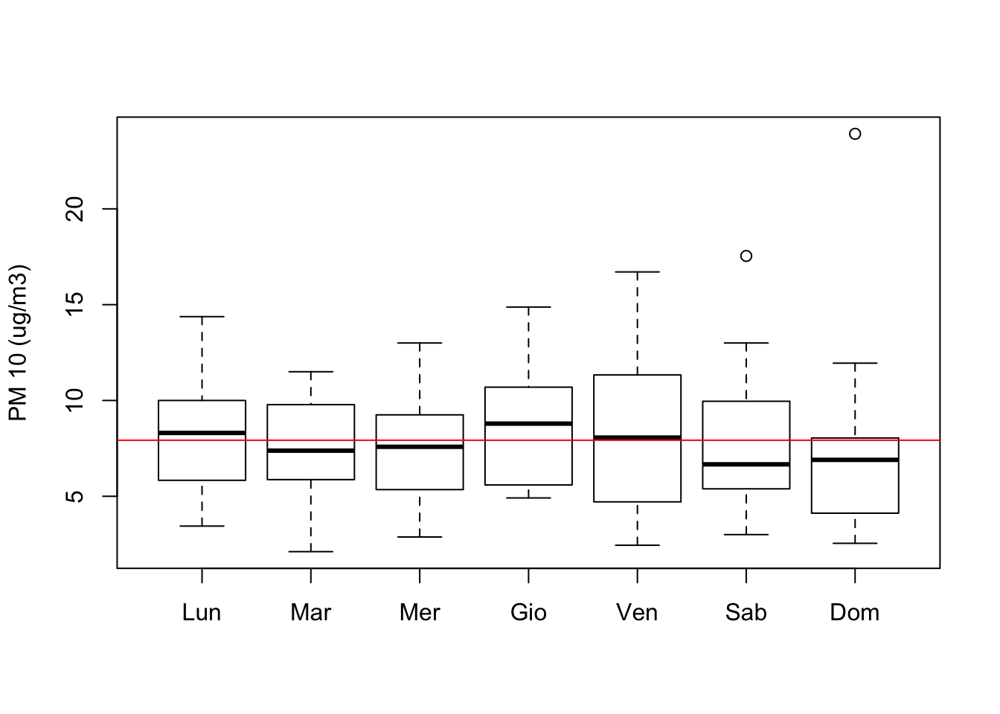
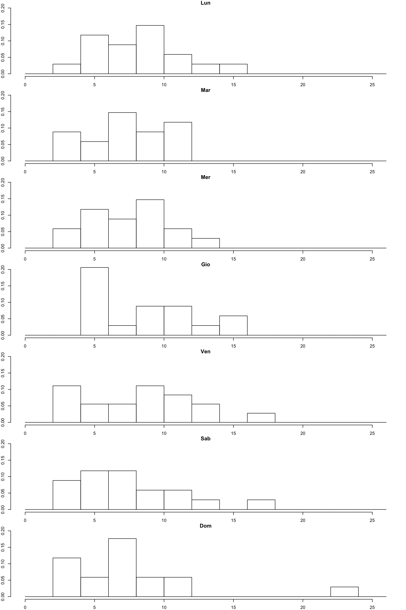

Chapter 5 Fare pratica con i dati
 Originally posted here.
Originally posted here.
5.1 Inquinamento a San Andreas
Iniziamo scaricando il dataset dal link dove ho isolato (e pulito) i dati raccolti dall’agenzia americana per la tutela dell’ambiente, relativi alle rilevazioni orarie della concentrazione delle PM10 nell’aria nella città di San Andreas, CA.
Questo dataset è una parte di un dataset molto più grande che si può trovare al link. Queste analisi sono ispirate a (Peng 2015).
Una volta salvato il file nella nostra cartella data passiamo a leggere il suo contenuto.
PM10dataSA <- read.csv("./data/PM10dataSanAndreas.csv")
knitr::kable(
head(PM10dataSA),
booktabs = TRUE
)| X.2 | X.1 | X | State.Code | County.Code | Site.Num | Parameter.Code | POC | Latitude | Longitude | Datum | Parameter.Name | Date.Local | Time.Local | Date.GMT | Time.GMT | Sample.Measurement | Units.of.Measure | MDL | Uncertainty | Qualifier | Method.Type | Method.Code | Method.Name | State.Name | County.Name | Date.of.Last.Change | DateTime.Local |
|---|---|---|---|---|---|---|---|---|---|---|---|---|---|---|---|---|---|---|---|---|---|---|---|---|---|---|---|
| 1 | 1 | 308088 | 6 | 9 | 1 | 81102 | 3 | 38.20185 | -120.6816 | WGS84 | PM10 Total 0-10um STP | 2016-01-01 | 00:00 | 2016-01-01 | 08:00 | 25 | Micrograms/cubic meter (25 C) | 4 | NA | NA | FEM | 122 | INSTRUMENT MET ONE 4 MODELS - BETA ATTENUATION | California | Calaveras | 2016-05-06 | 2016-01-01 00:00:00 |
| 2 | 2 | 308089 | 6 | 9 | 1 | 81102 | 3 | 38.20185 | -120.6816 | WGS84 | PM10 Total 0-10um STP | 2016-01-01 | 01:00 | 2016-01-01 | 09:00 | 48 | Micrograms/cubic meter (25 C) | 4 | NA | NA | FEM | 122 | INSTRUMENT MET ONE 4 MODELS - BETA ATTENUATION | California | Calaveras | 2016-05-06 | 2016-01-01 01:00:00 |
| 3 | 3 | 308090 | 6 | 9 | 1 | 81102 | 3 | 38.20185 | -120.6816 | WGS84 | PM10 Total 0-10um STP | 2016-01-01 | 02:00 | 2016-01-01 | 10:00 | 26 | Micrograms/cubic meter (25 C) | 4 | NA | NA | FEM | 122 | INSTRUMENT MET ONE 4 MODELS - BETA ATTENUATION | California | Calaveras | 2016-05-06 | 2016-01-01 02:00:00 |
| 4 | 4 | 308091 | 6 | 9 | 1 | 81102 | 3 | 38.20185 | -120.6816 | WGS84 | PM10 Total 0-10um STP | 2016-01-01 | 03:00 | 2016-01-01 | 11:00 | 14 | Micrograms/cubic meter (25 C) | 4 | NA | NA | FEM | 122 | INSTRUMENT MET ONE 4 MODELS - BETA ATTENUATION | California | Calaveras | 2016-05-06 | 2016-01-01 03:00:00 |
| 5 | 5 | 308092 | 6 | 9 | 1 | 81102 | 3 | 38.20185 | -120.6816 | WGS84 | PM10 Total 0-10um STP | 2016-01-01 | 04:00 | 2016-01-01 | 12:00 | 7 | Micrograms/cubic meter (25 C) | 4 | NA | NA | FEM | 122 | INSTRUMENT MET ONE 4 MODELS - BETA ATTENUATION | California | Calaveras | 2016-05-06 | 2016-01-01 04:00:00 |
| 6 | 6 | 308093 | 6 | 9 | 1 | 81102 | 3 | 38.20185 | -120.6816 | WGS84 | PM10 Total 0-10um STP | 2016-01-01 | 05:00 | 2016-01-01 | 13:00 | 14 | Micrograms/cubic meter (25 C) | 4 | NA | NA | FEM | 122 | INSTRUMENT MET ONE 4 MODELS - BETA ATTENUATION | California | Calaveras | 2016-05-06 | 2016-01-01 05:00:00 |
Possiamo iniziare a prendere confidenza con il dataset leggendo alcune informazioni essenziali, come la dimensione, il nome delle variabili, oppure ne possiamo esplorare la struttura, visualizzare le prime o le ultime righe.
dim(PM10dataSA)## [1] 2581 28Vediamo subito che il dataset contiene più di 2mila osservazioni per 26 variabili. Accediamo i nomi delle variabili per vedere se riusciamo a capirne il significato.
names(PM10dataSA)## [1] "X.2" "X.1" "X"
## [4] "State.Code" "County.Code" "Site.Num"
## [7] "Parameter.Code" "POC" "Latitude"
## [10] "Longitude" "Datum" "Parameter.Name"
## [13] "Date.Local" "Time.Local" "Date.GMT"
## [16] "Time.GMT" "Sample.Measurement" "Units.of.Measure"
## [19] "MDL" "Uncertainty" "Qualifier"
## [22] "Method.Type" "Method.Code" "Method.Name"
## [25] "State.Name" "County.Name" "Date.of.Last.Change"
## [28] "DateTime.Local"Proseguiamo visualizzando la struttura ed alcune righe dei dati.
str(PM10dataSA)## 'data.frame': 2581 obs. of 28 variables:
## $ X.2 : int 1 2 3 4 5 6 7 8 9 10 ...
## $ X.1 : int 1 2 3 4 5 6 7 8 9 10 ...
## $ X : int 308088 308089 308090 308091 308092 308093 308094 308095 308096 308097 ...
## $ State.Code : int 6 6 6 6 6 6 6 6 6 6 ...
## $ County.Code : int 9 9 9 9 9 9 9 9 9 9 ...
## $ Site.Num : int 1 1 1 1 1 1 1 1 1 1 ...
## $ Parameter.Code : int 81102 81102 81102 81102 81102 81102 81102 81102 81102 81102 ...
## $ POC : int 3 3 3 3 3 3 3 3 3 3 ...
## $ Latitude : num 38.2 38.2 38.2 38.2 38.2 ...
## $ Longitude : num -121 -121 -121 -121 -121 ...
## $ Datum : Factor w/ 1 level "WGS84": 1 1 1 1 1 1 1 1 1 1 ...
## $ Parameter.Name : Factor w/ 1 level "PM10 Total 0-10um STP": 1 1 1 1 1 1 1 1 1 1 ...
## $ Date.Local : Factor w/ 120 levels "2016-01-01","2016-01-02",..: 1 1 1 1 1 1 1 1 1 1 ...
## $ Time.Local : Factor w/ 24 levels "00:00","01:00",..: 1 2 3 4 5 6 7 8 9 10 ...
## $ Date.GMT : Factor w/ 122 levels "2016-01-01","2016-01-02",..: 1 1 1 1 1 1 1 1 1 1 ...
## $ Time.GMT : Factor w/ 24 levels "00:00","01:00",..: 9 10 11 12 13 14 15 16 17 18 ...
## $ Sample.Measurement : int 25 48 26 14 7 14 11 16 17 11 ...
## $ Units.of.Measure : Factor w/ 1 level "Micrograms/cubic meter (25 C)": 1 1 1 1 1 1 1 1 1 1 ...
## $ MDL : int 4 4 4 4 4 4 4 4 4 4 ...
## $ Uncertainty : logi NA NA NA NA NA NA ...
## $ Qualifier : logi NA NA NA NA NA NA ...
## $ Method.Type : Factor w/ 1 level "FEM": 1 1 1 1 1 1 1 1 1 1 ...
## $ Method.Code : int 122 122 122 122 122 122 122 122 122 122 ...
## $ Method.Name : Factor w/ 1 level "INSTRUMENT MET ONE 4 MODELS - BETA ATTENUATION": 1 1 1 1 1 1 1 1 1 1 ...
## $ State.Name : Factor w/ 1 level "California": 1 1 1 1 1 1 1 1 1 1 ...
## $ County.Name : Factor w/ 1 level "Calaveras": 1 1 1 1 1 1 1 1 1 1 ...
## $ Date.of.Last.Change: Factor w/ 4 levels "2016-05-06","2016-05-12",..: 1 1 1 1 1 1 1 1 1 1 ...
## $ DateTime.Local : Factor w/ 2580 levels "2016-01-01 00:00:00",..: 1 2 3 4 5 6 7 8 9 10 ...knitr::kable(
head(PM10dataSA),
booktabs = TRUE
)| X.2 | X.1 | X | State.Code | County.Code | Site.Num | Parameter.Code | POC | Latitude | Longitude | Datum | Parameter.Name | Date.Local | Time.Local | Date.GMT | Time.GMT | Sample.Measurement | Units.of.Measure | MDL | Uncertainty | Qualifier | Method.Type | Method.Code | Method.Name | State.Name | County.Name | Date.of.Last.Change | DateTime.Local |
|---|---|---|---|---|---|---|---|---|---|---|---|---|---|---|---|---|---|---|---|---|---|---|---|---|---|---|---|
| 1 | 1 | 308088 | 6 | 9 | 1 | 81102 | 3 | 38.20185 | -120.6816 | WGS84 | PM10 Total 0-10um STP | 2016-01-01 | 00:00 | 2016-01-01 | 08:00 | 25 | Micrograms/cubic meter (25 C) | 4 | NA | NA | FEM | 122 | INSTRUMENT MET ONE 4 MODELS - BETA ATTENUATION | California | Calaveras | 2016-05-06 | 2016-01-01 00:00:00 |
| 2 | 2 | 308089 | 6 | 9 | 1 | 81102 | 3 | 38.20185 | -120.6816 | WGS84 | PM10 Total 0-10um STP | 2016-01-01 | 01:00 | 2016-01-01 | 09:00 | 48 | Micrograms/cubic meter (25 C) | 4 | NA | NA | FEM | 122 | INSTRUMENT MET ONE 4 MODELS - BETA ATTENUATION | California | Calaveras | 2016-05-06 | 2016-01-01 01:00:00 |
| 3 | 3 | 308090 | 6 | 9 | 1 | 81102 | 3 | 38.20185 | -120.6816 | WGS84 | PM10 Total 0-10um STP | 2016-01-01 | 02:00 | 2016-01-01 | 10:00 | 26 | Micrograms/cubic meter (25 C) | 4 | NA | NA | FEM | 122 | INSTRUMENT MET ONE 4 MODELS - BETA ATTENUATION | California | Calaveras | 2016-05-06 | 2016-01-01 02:00:00 |
| 4 | 4 | 308091 | 6 | 9 | 1 | 81102 | 3 | 38.20185 | -120.6816 | WGS84 | PM10 Total 0-10um STP | 2016-01-01 | 03:00 | 2016-01-01 | 11:00 | 14 | Micrograms/cubic meter (25 C) | 4 | NA | NA | FEM | 122 | INSTRUMENT MET ONE 4 MODELS - BETA ATTENUATION | California | Calaveras | 2016-05-06 | 2016-01-01 03:00:00 |
| 5 | 5 | 308092 | 6 | 9 | 1 | 81102 | 3 | 38.20185 | -120.6816 | WGS84 | PM10 Total 0-10um STP | 2016-01-01 | 04:00 | 2016-01-01 | 12:00 | 7 | Micrograms/cubic meter (25 C) | 4 | NA | NA | FEM | 122 | INSTRUMENT MET ONE 4 MODELS - BETA ATTENUATION | California | Calaveras | 2016-05-06 | 2016-01-01 04:00:00 |
| 6 | 6 | 308093 | 6 | 9 | 1 | 81102 | 3 | 38.20185 | -120.6816 | WGS84 | PM10 Total 0-10um STP | 2016-01-01 | 05:00 | 2016-01-01 | 13:00 | 14 | Micrograms/cubic meter (25 C) | 4 | NA | NA | FEM | 122 | INSTRUMENT MET ONE 4 MODELS - BETA ATTENUATION | California | Calaveras | 2016-05-06 | 2016-01-01 05:00:00 |
knitr::kable(
tail(PM10dataSA),
booktabs = TRUE
)| X.2 | X.1 | X | State.Code | County.Code | Site.Num | Parameter.Code | POC | Latitude | Longitude | Datum | Parameter.Name | Date.Local | Time.Local | Date.GMT | Time.GMT | Sample.Measurement | Units.of.Measure | MDL | Uncertainty | Qualifier | Method.Type | Method.Code | Method.Name | State.Name | County.Name | Date.of.Last.Change | DateTime.Local | |
|---|---|---|---|---|---|---|---|---|---|---|---|---|---|---|---|---|---|---|---|---|---|---|---|---|---|---|---|---|
| 2576 | 2576 | 2862 | 310949 | 6 | 9 | 1 | 81102 | 3 | 38.20185 | -120.6816 | WGS84 | PM10 Total 0-10um STP | 2016-04-30 | 18:00 | 2016-05-01 | 02:00 | 15 | Micrograms/cubic meter (25 C) | 4 | NA | NA | FEM | 122 | INSTRUMENT MET ONE 4 MODELS - BETA ATTENUATION | California | Calaveras | 2016-11-08 | 2016-04-30 18:00:00 |
| 2577 | 2577 | 2863 | 310950 | 6 | 9 | 1 | 81102 | 3 | 38.20185 | -120.6816 | WGS84 | PM10 Total 0-10um STP | 2016-04-30 | 19:00 | 2016-05-01 | 03:00 | 13 | Micrograms/cubic meter (25 C) | 4 | NA | NA | FEM | 122 | INSTRUMENT MET ONE 4 MODELS - BETA ATTENUATION | California | Calaveras | 2016-11-08 | 2016-04-30 19:00:00 |
| 2578 | 2578 | 2864 | 310951 | 6 | 9 | 1 | 81102 | 3 | 38.20185 | -120.6816 | WGS84 | PM10 Total 0-10um STP | 2016-04-30 | 20:00 | 2016-05-01 | 04:00 | 9 | Micrograms/cubic meter (25 C) | 4 | NA | NA | FEM | 122 | INSTRUMENT MET ONE 4 MODELS - BETA ATTENUATION | California | Calaveras | 2016-11-08 | 2016-04-30 20:00:00 |
| 2579 | 2579 | 2865 | 310952 | 6 | 9 | 1 | 81102 | 3 | 38.20185 | -120.6816 | WGS84 | PM10 Total 0-10um STP | 2016-04-30 | 21:00 | 2016-05-01 | 05:00 | 4 | Micrograms/cubic meter (25 C) | 4 | NA | NA | FEM | 122 | INSTRUMENT MET ONE 4 MODELS - BETA ATTENUATION | California | Calaveras | 2016-11-08 | 2016-04-30 21:00:00 |
| 2580 | 2580 | 2866 | 310953 | 6 | 9 | 1 | 81102 | 3 | 38.20185 | -120.6816 | WGS84 | PM10 Total 0-10um STP | 2016-04-30 | 22:00 | 2016-05-01 | 06:00 | 6 | Micrograms/cubic meter (25 C) | 4 | NA | NA | FEM | 122 | INSTRUMENT MET ONE 4 MODELS - BETA ATTENUATION | California | Calaveras | 2016-11-08 | 2016-04-30 22:00:00 |
| 2581 | 2581 | 2867 | 310954 | 6 | 9 | 1 | 81102 | 3 | 38.20185 | -120.6816 | WGS84 | PM10 Total 0-10um STP | 2016-04-30 | 23:00 | 2016-05-01 | 07:00 | 4 | Micrograms/cubic meter (25 C) | 4 | NA | NA | FEM | 122 | INSTRUMENT MET ONE 4 MODELS - BETA ATTENUATION | California | Calaveras | 2016-11-08 | 2016-04-30 23:00:00 |
Vediamo che i dati contengono indicazioni come coordinate geografiche e lo stato dove sono stati raccolti i dati. Nel caso del dataset originale, queste informazioni sono essenziali per individuare il luogo di raccolta dati, mentre nel nostro caso potrebbero essere omesse, dopo aver verificato che siano consistenti in tutto il dataset.
Siamo interessati a capire l’andamento delle PM10 nel nostro dataset durante il tempo in cui sono stati raccolti i dati. Per prima cosa convertiamo i dati riguardanti le date nel giusto formato, cioè in Date. Usiamo per ora solo le informazioni relative al fuso orario locale.
PM10dataSA$Date.Local <- as.Date(PM10dataSA$Date.Local)Ora che i dati sono in formato Date, R capisce che sono numeri salvati con un particolare formato e non stringhe.
In questo modo possiamo, ad esempio, vedere il periodo temporale che coprono usano i comandi min e max.
paste(min(PM10dataSA$Date.Local), which.min(PM10dataSA$Date.Local))## [1] "2016-01-01 1"paste(max(PM10dataSA$Date.Local), which.max(PM10dataSA$Date.Local))## [1] "2016-04-30 2559"Possiamo notare che il dataset non supera Aprile e che il max non è assunto nell’ultima osservazione, che sarebbe la 2867. Usando il comando tail() vediamo di capire perché.
knitr::kable(
tail(PM10dataSA),
booktabs = TRUE
)| X.2 | X.1 | X | State.Code | County.Code | Site.Num | Parameter.Code | POC | Latitude | Longitude | Datum | Parameter.Name | Date.Local | Time.Local | Date.GMT | Time.GMT | Sample.Measurement | Units.of.Measure | MDL | Uncertainty | Qualifier | Method.Type | Method.Code | Method.Name | State.Name | County.Name | Date.of.Last.Change | DateTime.Local | |
|---|---|---|---|---|---|---|---|---|---|---|---|---|---|---|---|---|---|---|---|---|---|---|---|---|---|---|---|---|
| 2576 | 2576 | 2862 | 310949 | 6 | 9 | 1 | 81102 | 3 | 38.20185 | -120.6816 | WGS84 | PM10 Total 0-10um STP | 2016-04-30 | 18:00 | 2016-05-01 | 02:00 | 15 | Micrograms/cubic meter (25 C) | 4 | NA | NA | FEM | 122 | INSTRUMENT MET ONE 4 MODELS - BETA ATTENUATION | California | Calaveras | 2016-11-08 | 2016-04-30 18:00:00 |
| 2577 | 2577 | 2863 | 310950 | 6 | 9 | 1 | 81102 | 3 | 38.20185 | -120.6816 | WGS84 | PM10 Total 0-10um STP | 2016-04-30 | 19:00 | 2016-05-01 | 03:00 | 13 | Micrograms/cubic meter (25 C) | 4 | NA | NA | FEM | 122 | INSTRUMENT MET ONE 4 MODELS - BETA ATTENUATION | California | Calaveras | 2016-11-08 | 2016-04-30 19:00:00 |
| 2578 | 2578 | 2864 | 310951 | 6 | 9 | 1 | 81102 | 3 | 38.20185 | -120.6816 | WGS84 | PM10 Total 0-10um STP | 2016-04-30 | 20:00 | 2016-05-01 | 04:00 | 9 | Micrograms/cubic meter (25 C) | 4 | NA | NA | FEM | 122 | INSTRUMENT MET ONE 4 MODELS - BETA ATTENUATION | California | Calaveras | 2016-11-08 | 2016-04-30 20:00:00 |
| 2579 | 2579 | 2865 | 310952 | 6 | 9 | 1 | 81102 | 3 | 38.20185 | -120.6816 | WGS84 | PM10 Total 0-10um STP | 2016-04-30 | 21:00 | 2016-05-01 | 05:00 | 4 | Micrograms/cubic meter (25 C) | 4 | NA | NA | FEM | 122 | INSTRUMENT MET ONE 4 MODELS - BETA ATTENUATION | California | Calaveras | 2016-11-08 | 2016-04-30 21:00:00 |
| 2580 | 2580 | 2866 | 310953 | 6 | 9 | 1 | 81102 | 3 | 38.20185 | -120.6816 | WGS84 | PM10 Total 0-10um STP | 2016-04-30 | 22:00 | 2016-05-01 | 06:00 | 6 | Micrograms/cubic meter (25 C) | 4 | NA | NA | FEM | 122 | INSTRUMENT MET ONE 4 MODELS - BETA ATTENUATION | California | Calaveras | 2016-11-08 | 2016-04-30 22:00:00 |
| 2581 | 2581 | 2867 | 310954 | 6 | 9 | 1 | 81102 | 3 | 38.20185 | -120.6816 | WGS84 | PM10 Total 0-10um STP | 2016-04-30 | 23:00 | 2016-05-01 | 07:00 | 4 | Micrograms/cubic meter (25 C) | 4 | NA | NA | FEM | 122 | INSTRUMENT MET ONE 4 MODELS - BETA ATTENUATION | California | Calaveras | 2016-11-08 | 2016-04-30 23:00:00 |
knitr::kable(
tail(PM10dataSA$Date.Local, 25),
booktabs = TRUE
)| x |
|---|
| 2016-04-29 |
| 2016-04-29 |
| 2016-04-30 |
| 2016-04-30 |
| 2016-04-30 |
| 2016-04-30 |
| 2016-04-30 |
| 2016-04-30 |
| 2016-04-30 |
| 2016-04-30 |
| 2016-04-30 |
| 2016-04-30 |
| 2016-04-30 |
| 2016-04-30 |
| 2016-04-30 |
| 2016-04-30 |
| 2016-04-30 |
| 2016-04-30 |
| 2016-04-30 |
| 2016-04-30 |
| 2016-04-30 |
| 2016-04-30 |
| 2016-04-30 |
| 2016-04-30 |
| 2016-04-30 |
Fortunatamente vediamo che tutte le ultime 24 rilevazioni sono state fatte durante lo stesso giorno, pertanto il risultato di which.min() non è un errore. Ce lo potevamo aspettare, visto che le misurazioni sono ogni ora, ma è sempre meglio controllare.
Usando la funzione summary() estrapoliamo altre informazioni dal dataset.
summary(PM10dataSA)## X.2 X.1 X State.Code County.Code
## Min. : 1 Min. : 1 Min. :308088 Min. :6 Min. :9
## 1st Qu.: 646 1st Qu.: 771 1st Qu.:308858 1st Qu.:6 1st Qu.:9
## Median :1291 Median :1442 Median :309529 Median :6 Median :9
## Mean :1291 Mean :1464 Mean :309551 Mean :6 Mean :9
## 3rd Qu.:1936 3rd Qu.:2192 3rd Qu.:310279 3rd Qu.:6 3rd Qu.:9
## Max. :2581 Max. :2867 Max. :310954 Max. :6 Max. :9
##
## Site.Num Parameter.Code POC Latitude Longitude
## Min. :1 Min. :81102 Min. :3 Min. :38.2 Min. :-120.7
## 1st Qu.:1 1st Qu.:81102 1st Qu.:3 1st Qu.:38.2 1st Qu.:-120.7
## Median :1 Median :81102 Median :3 Median :38.2 Median :-120.7
## Mean :1 Mean :81102 Mean :3 Mean :38.2 Mean :-120.7
## 3rd Qu.:1 3rd Qu.:81102 3rd Qu.:3 3rd Qu.:38.2 3rd Qu.:-120.7
## Max. :1 Max. :81102 Max. :3 Max. :38.2 Max. :-120.7
##
## Datum Parameter.Name Date.Local
## WGS84:2581 PM10 Total 0-10um STP:2581 Min. :2016-01-01
## 1st Qu.:2016-02-02
## Median :2016-03-01
## Mean :2016-03-02
## 3rd Qu.:2016-04-02
## Max. :2016-04-30
##
## Time.Local Date.GMT Time.GMT Sample.Measurement
## 19:00 : 116 2016-01-02: 24 03:00 : 116 Min. : 1.00
## 20:00 : 116 2016-01-03: 24 04:00 : 116 1st Qu.: 4.00
## 06:00 : 113 2016-01-04: 24 02:00 : 113 Median : 7.00
## 07:00 : 113 2016-01-26: 24 05:00 : 113 Mean : 8.24
## 18:00 : 113 2016-01-28: 24 14:00 : 113 3rd Qu.:11.00
## 21:00 : 113 2016-01-29: 24 15:00 : 113 Max. :60.00
## (Other):1897 (Other) :2437 (Other):1897
## Units.of.Measure MDL Uncertainty
## Micrograms/cubic meter (25 C):2581 Min. :4 Mode:logical
## 1st Qu.:4 NA's:2581
## Median :4
## Mean :4
## 3rd Qu.:4
## Max. :4
##
## Qualifier Method.Type Method.Code
## Mode:logical FEM:2581 Min. :122
## NA's:2581 1st Qu.:122
## Median :122
## Mean :122
## 3rd Qu.:122
## Max. :122
##
## Method.Name State.Name
## INSTRUMENT MET ONE 4 MODELS - BETA ATTENUATION:2581 California:2581
##
##
##
##
##
##
## County.Name Date.of.Last.Change DateTime.Local
## Calaveras:2581 2016-05-06:619 2016-01-01 00:00:00: 1
## 2016-05-12:656 2016-01-01 01:00:00: 1
## 2016-06-22:618 2016-01-01 02:00:00: 1
## 2016-11-08:688 2016-01-01 03:00:00: 1
## 2016-01-01 04:00:00: 1
## (Other) :2575
## NA's : 1Possiamo notare che alcune delle variabili sono trattate come numeriche anche se dovrebbero essere di tipo Factor. Possiamo o convertirle, o semplicemente tenerlo a mente qualora dovessimo lavorarci. Inoltre potremmo eliminare le colonne che non ci interessano usano l’assegnazione <- NULL. Ad esempio, dopo aver verificato che latitudine e longitudine sono le stesse in tutto il dataset, e corrispondono alla città di San Andreas, potremmo eliminarle. Va prima verificato che il dataset non contenga dati estranei, altrimenti eliminando una variabile, potremmo non essere più in grado di capirlo!
Tale verifica si può fare (in questo caso, ma può dipende dai dati) o usando il comando unique(), o anche leggendo i risultati di summary().
Volendo visualizzare i dati, che sono raccolti giornalmente, potrebbe fare comodo una colonna che riporta data e ora, in un formato che R riconosce. Possiamo ottenere tutto ciò con un solo comando. Va segnalato che il datset che è stato fornito, già contiene tale colonna, che è stata creata con il comando:
Sys.setenv(TZ='GMT')
#Sys.setlocale("LC_TIME","it_IT")
PM10dataSA$DateTime.Local <- as.POSIXct(paste(PM10dataSA[,c("Date.Local")] , PM10dataSA[,c("Time.Local")] ), format = "%Y-%m-%d %H:%M", tz="America/Los_Angeles",usetz=TRUE)Ora possiamo visualizzare i dati usando la funzione plot() aggiungendo delle opportune label lungo gli assi per migliorare la leggibilità.
plot(PM10dataSA$DateTime.Local, PM10dataSA$Sample.Measurement, xlab = "2016", ylab= "PM 10 (ug/m3)", cex = .5)Poiché il grafico contiene un punto per ogni misurazione oraria, il grafico contiene moltissime informazioni.
Aggiungiamo una linea che indica il limite massimo giornaliero di PM 10 consentito (in Italia).
plot(PM10dataSA$DateTime.Local, PM10dataSA$Sample.Measurement, xlab = "2016", ylab= "PM 10 (ug/m3)", cex = .5)
abline(h = 50, col = "red")# Per salviare l'immagine
#png(filename="../plot/DailyPM10.png")Si può notare che (fortunatamente) poche misurazioni superano i limiti consentiti.
5.1.1 Dati giornalieri
Vediamo di ridurle il numero di dati, aggregandoli per avere misurazioni giornaliere. Possiamo farlo usando la funzione aggregate() che ci permette di applicare una funzione ad un dataset indicando. Possiamo, ad esempio, decidere di salvare in un nuovo dataset le misure medie e massime per i dati di SA.
DailyVal <- aggregate(PM10dataSA$Sample.Measurement ~ Date.Local, data = PM10dataSA, FUN = mean)
DailyVal[,3] <- aggregate(PM10dataSA$Sample.Measurement ~ Date.Local, data = PM10dataSA, FUN = max)[2]
head(DailyVal)## Date.Local PM10dataSA$Sample.Measurement PM10dataSA$Sample.Measurement.1
## 1 2016-01-01 16.70833 48
## 2 2016-01-02 17.54167 38
## 3 2016-01-03 23.91667 60
## 4 2016-01-04 14.37500 36
## 5 2016-01-05 3.05000 10
## 6 2016-01-06 2.87500 6Possiamo migliorare la leggibilità del dataset cambiando i nomi delle variabili.
names(DailyVal)[2:3] <- c("mean daily PM10", "max daily PM 10")
head(DailyVal)## Date.Local mean daily PM10 max daily PM 10
## 1 2016-01-01 16.70833 48
## 2 2016-01-02 17.54167 38
## 3 2016-01-03 23.91667 60
## 4 2016-01-04 14.37500 36
## 5 2016-01-05 3.05000 10
## 6 2016-01-06 2.87500 6Visualizziamo ora i dati medi e massimi giornalieri:
plot(DailyVal$Date.Local, DailyVal$`mean daily PM10`, xlab = "2016", ylab= "PM 10 (ug/m3)", cex = .8, main = "Concentrazione media giornaliera di PM10")
plot(DailyVal$Date.Local, DailyVal$`max daily PM 10`, xlab = "2016", ylab= "PM 10 (ug/m3)", cex = .8, main = "Concentrazione massima giornaliera di PM10")
abline(h = 50, col = "red")Potrebbe essere interessante vedere se il giorno della settimana influenza la concentrazione di PM10, ad esempio in giorni con più traffico potremmo aspettarci più inquinamento.
typeof(DailyVal$Date.Local)## [1] "double"#Sys.setlocale("LC_TIME","C") #Nomi
DailyVal$DayOfTheWeek <- weekdays(DailyVal$Date.Local, abbreviate = TRUE)
head(DailyVal)## Date.Local mean daily PM10 max daily PM 10 DayOfTheWeek
## 1 2016-01-01 16.70833 48 Ven
## 2 2016-01-02 17.54167 38 Sab
## 3 2016-01-03 23.91667 60 Dom
## 4 2016-01-04 14.37500 36 Lun
## 5 2016-01-05 3.05000 10 Mar
## 6 2016-01-06 2.87500 6 Mer#ordiniamo i giorni in modo che la settimana inizi di lunedì
# ci sarà utile dopo
DailyVal$DayOfTheWeek <- ordered(DailyVal$DayOfTheWeek, levels=c( "Lun" , "Mar", "Mer" , "Gio", "Ven" , "Sab", "Dom" ))Vediamo di colorare il grafico precedente usando un colore diverso per ogni giorno della settimana.
plot(DailyVal$Date.Local, DailyVal$`max daily PM 10`, xlab = "2016", ylab= "PM 10 (ug/m3)", cex = .8, main = "Concentrazione massima giornaliera di PM10", col = DailyVal$DayOfTheWeek)
abline(h = 50, col = "red")Vediamo che non sembra che i picchi siano raggiunti negli stessi giorni. Comunque una legenda andrebbe aggiunta. Vediamo con dei boxplot come la quantità media di polveri PM10 è distribuita rispetto ai giorni della settimana.
boxplot(`mean daily PM10` ~ DayOfTheWeek, data = DailyVal, ylab= "PM 10 (ug/m3)")Aggiungere ad esempio una linea che indica le media delle misurazioni, aiuta a fare un confronto tra i dati.
boxplot( `mean daily PM10` ~ DayOfTheWeek, data = DailyVal, ylab= "PM 10 (ug/m3)")
abline(h = mean(DailyVal$`mean daily PM10`), col = "red")
Vediamo la data in cui è stato assunto il valore massimo:
DailyVal[DailyVal$`mean daily PM10` > 20,]## Date.Local mean daily PM10 max daily PM 10 DayOfTheWeek
## 3 2016-01-03 23.91667 60 DomChe sarà successo quel giorno? Potrebbe essere un errore di lettura?
Se volessimo visualizzare la distribuzione dei dati rispetto ai giorni, possiamo usare la funzione hist(). Purtroppo tale funzione non supporta la notazione ~, perciò dovremo specificare un grafico per giorno della settimana.
par(mfrow = c(7,1), mar = c(2,2,1,1))
for (i in levels(DailyVal$DayOfTheWeek) ) {
hist( DailyVal[DailyVal$DayOfTheWeek == i, "mean daily PM10"] , freq = FALSE, main = i, ylim = c(0, 0.2) , breaks = seq(0,26,2))
}
Dal grafico possiamo capire come si distribuiscono le misurazioni rispetto ai giorni della settimana. Si usi l’help per comprendere i parametri che sono stati usati.
5.2 Inquinamento in California
Decidiamo ora di concentrare la nostra attenzione sull’inquinamento in California e dopo aver letto il dataset che contiene i valori medi giornalieri di PM10, salviamo un sottoinsieme di dati che contiene solo dati relativi alla California.
PM10data <- read.csv("./data/daily_81102_2016.csv")
dim(PM10data)## [1] 118885 29Vediamo che il file è molto grande, contiene molte righe e molte variabili. R impiega diverso tempo a leggerlo.
PM10dataCAL <- PM10data[PM10data$State.Name == "California",]
knitr::kable(
head(PM10dataCAL),
booktabs = TRUE
)| State.Code | County.Code | Site.Num | Parameter.Code | POC | Latitude | Longitude | Datum | Parameter.Name | Sample.Duration | Pollutant.Standard | Date.Local | Units.of.Measure | Event.Type | Observation.Count | Observation.Percent | Arithmetic.Mean | X1st.Max.Value | X1st.Max.Hour | AQI | Method.Code | Method.Name | Local.Site.Name | Address | State.Name | County.Name | City.Name | CBSA.Name | Date.of.Last.Change | |
|---|---|---|---|---|---|---|---|---|---|---|---|---|---|---|---|---|---|---|---|---|---|---|---|---|---|---|---|---|---|
| 15472 | 6 | 7 | 8 | 81102 | 3 | 39.76154 | -121.8416 | WGS84 | PM10 Total 0-10um STP | 24-HR BLK AVG | PM10 24-hour 2006 | 2016-01-01 | Micrograms/cubic meter (25 C) | None | 1 | 100 | 21 | 21 | 23 | 19 | NA | - | Chico-East Avenue | 984 East Avenue, Chico | California | Butte | Chico | Chico, CA | 2016-11-08 |
| 15473 | 6 | 7 | 8 | 81102 | 3 | 39.76154 | -121.8416 | WGS84 | PM10 Total 0-10um STP | 24-HR BLK AVG | PM10 24-hour 2006 | 2016-01-02 | Micrograms/cubic meter (25 C) | None | 1 | 100 | 18 | 18 | 23 | 17 | NA | - | Chico-East Avenue | 984 East Avenue, Chico | California | Butte | Chico | Chico, CA | 2016-11-08 |
| 15474 | 6 | 7 | 8 | 81102 | 3 | 39.76154 | -121.8416 | WGS84 | PM10 Total 0-10um STP | 24-HR BLK AVG | PM10 24-hour 2006 | 2016-01-03 | Micrograms/cubic meter (25 C) | None | 1 | 100 | 23 | 23 | 23 | 21 | NA | - | Chico-East Avenue | 984 East Avenue, Chico | California | Butte | Chico | Chico, CA | 2016-11-08 |
| 15475 | 6 | 7 | 8 | 81102 | 3 | 39.76154 | -121.8416 | WGS84 | PM10 Total 0-10um STP | 24-HR BLK AVG | PM10 24-hour 2006 | 2016-01-04 | Micrograms/cubic meter (25 C) | None | 1 | 100 | 31 | 31 | 23 | 29 | NA | - | Chico-East Avenue | 984 East Avenue, Chico | California | Butte | Chico | Chico, CA | 2016-11-08 |
| 15476 | 6 | 7 | 8 | 81102 | 3 | 39.76154 | -121.8416 | WGS84 | PM10 Total 0-10um STP | 24-HR BLK AVG | PM10 24-hour 2006 | 2016-01-05 | Micrograms/cubic meter (25 C) | None | 1 | 100 | 9 | 9 | 23 | 8 | NA | - | Chico-East Avenue | 984 East Avenue, Chico | California | Butte | Chico | Chico, CA | 2016-11-08 |
| 15477 | 6 | 7 | 8 | 81102 | 3 | 39.76154 | -121.8416 | WGS84 | PM10 Total 0-10um STP | 24-HR BLK AVG | PM10 24-hour 2006 | 2016-01-06 | Micrograms/cubic meter (25 C) | None | 1 | 100 | 6 | 6 | 23 | 6 | NA | - | Chico-East Avenue | 984 East Avenue, Chico | California | Butte | Chico | Chico, CA | 2016-11-08 |
In questo caso il nome della variabile che ci interessa è Arithmetic.Mean.
Ora vogliamo visualizzare su una mappa quali sono lo città che superano la soglia di inquinamento consentita durante le osservazioni. In R, questa operazione è molto semplice usando i pacchetti maps o RgoogleMaps.
#install.packages("maps")
library(maps)
map("county", "california", xlim=c(-125,-114), ylim=c(32,43))
points( PM10dataCAL[PM10dataCAL$Arithmetic.Mean > 50,c("Longitude", "Latitude")] ,cex = .8, col = "red")5.3 Inquinamento a Los Angeles
Usiamo lo stesso dataset contenente i dati giornalieri relativi alle PM10 negli Stati Uniti e concentriamoci sulla sola città di Los Angeles.
PM10dataLA <- PM10data[PM10data$City.Name== "Los Angeles",]
dim(PM10dataLA)## [1] 90 29Vediamo che sono state raccolte 90 osservazioni relative alla sola città di LA, cerchiamo di capire quando e con che frequenza sono state raccolte.
typeof(PM10dataLA)## [1] "list"PM10dataLA$Date.Local[1:10]## [1] 2016-01-01 2016-01-07 2016-01-13 2016-01-19 2016-01-25 2016-01-31
## [7] 2016-02-06 2016-02-12 2016-02-18 2016-02-24
## 336 Levels: 2016-01-01 2016-01-02 2016-01-03 2016-01-04 ... 2016-12-02Vediamo che le date sono state salvate come liste. In realtà, come già visto, R prevede il formato Date che potrebbe essere utile e più maneggevole di una lista per fare “operazioni aritmetiche”. Convertiamo quindi la colonna in Date.
PM10dataLA$Date.Local <- as.Date(PM10dataLA$Date.Local)
typeof(PM10dataLA$Date.Local)## [1] "double"La variabile ora risulta di tipo Date. Questo ci permette, ad esempio, di vedere quanti giorni passano tra una rilevazione e l’altra.
diff(PM10dataLA$Date.Local)## Time differences in days
## [1] 6 6 6 6 6 6 6 6 6 6 6 6 6 6
## [15] 6 6 6 6 6 6 7 5 6 6 6 6 6 6
## [29] 6 6 6 6 6 6 6 6 6 6 6 6 6 6
## [43] 6 12 -270 6 6 6 6 6 6 6 6 6 6 6
## [57] 6 6 12 6 6 6 6 6 6 6 6 6 6 6
## [71] 6 6 6 6 6 6 6 6 6 6 6 6 6 6
## [85] 6 6 6 6 6Salta all’occhio che la frequenza delle registrazioni è circa ogni 6 giorni, ma compare un dato inatteso. Investighiamo meglio cosa è successo.
unique(PM10dataLA$Date.Local)## [1] "2016-01-01" "2016-01-07" "2016-01-13" "2016-01-19" "2016-01-25"
## [6] "2016-01-31" "2016-02-06" "2016-02-12" "2016-02-18" "2016-02-24"
## [11] "2016-03-01" "2016-03-07" "2016-03-13" "2016-03-19" "2016-03-25"
## [16] "2016-03-31" "2016-04-06" "2016-04-12" "2016-04-18" "2016-04-24"
## [21] "2016-04-30" "2016-05-07" "2016-05-12" "2016-05-18" "2016-05-24"
## [26] "2016-05-30" "2016-06-05" "2016-06-11" "2016-06-17" "2016-06-23"
## [31] "2016-06-29" "2016-07-05" "2016-07-11" "2016-07-17" "2016-07-23"
## [36] "2016-07-29" "2016-08-04" "2016-08-10" "2016-08-16" "2016-08-22"
## [41] "2016-08-28" "2016-09-03" "2016-09-09" "2016-09-15" "2016-09-27"
## [46] "2016-05-06" "2016-09-21"length(unique(PM10dataLA$Date.Local))## [1] 47Capiamo che sebbene le osservazioni siano 90, non tutte si riferiscono a giorni differenti, quindi bisogna capire come gestire le misurazioni ripetute durante lo stesso giorno. Vediamo, ad esempio, cosa caratterizza le misurazioni ripetute del primo giorno dell’anno.
PM10dataLA[PM10dataLA$Date.Local== "2016-01-01",]## State.Code County.Code Site.Num Parameter.Code POC Latitude
## 23477 6 37 1103 81102 2 34.06659
## 23613 6 37 5005 81102 1 33.95080
## Longitude Datum Parameter.Name Sample.Duration
## 23477 -118.2269 WGS84 PM10 Total 0-10um STP 24 HOUR
## 23613 -118.4304 WGS84 PM10 Total 0-10um STP 24 HOUR
## Pollutant.Standard Date.Local Units.of.Measure
## 23477 PM10 24-hour 2006 2016-01-01 Micrograms/cubic meter (25 C)
## 23613 PM10 24-hour 2006 2016-01-01 Micrograms/cubic meter (25 C)
## Event.Type Observation.Count Observation.Percent Arithmetic.Mean
## 23477 None 1 100 17
## 23613 None 1 100 12
## X1st.Max.Value X1st.Max.Hour AQI Method.Code
## 23477 17 0 16 63
## 23613 12 0 11 63
## Method.Name Local.Site.Name
## 23477 HI-VOL SA/GMW-1200 - GRAVIMETRIC Los Angeles-North Main Street
## 23613 HI-VOL SA/GMW-1200 - GRAVIMETRIC LAX Hastings
## Address State.Name County.Name City.Name
## 23477 1630 N MAIN ST, LOS ANGELES California Los Angeles Los Angeles
## 23613 7201 W. WESTCHESTER PARKWAY California Los Angeles Los Angeles
## CBSA.Name Date.of.Last.Change
## 23477 Los Angeles-Long Beach-Anaheim, CA 2016-12-20
## 23613 Los Angeles-Long Beach-Anaheim, CA 2016-12-20Possiamo osservare che ci sono almeno due siti diversi dove vengono raccolti i dati. Questa osservazione segue sia la comparsa di due diversi Site.Num per la stessa data, sia le differenze nei valori di Latitude e Longitude. Vediamo se esistono solo due siti o più.
paste(unique(PM10dataLA$Site.Num) , unique(PM10dataLA$Latitude), unique(PM10dataLA$Longitude))## [1] "1103 34.06659 -118.22688" "5005 33.9508 -118.43043"Abbiamo appurato che esistono due (e solo due) siti individuati da diverse coordinate geografiche.
Estrapoliamo ora alcune informazioni per le variabili numeriche usando il comando summary().
summary(PM10dataLA)## State.Code County.Code Site.Num Parameter.Code POC
## Min. :6 Min. :37 Min. :1103 Min. :81102 Min. :1.0
## 1st Qu.:6 1st Qu.:37 1st Qu.:1103 1st Qu.:81102 1st Qu.:1.0
## Median :6 Median :37 Median :3054 Median :81102 Median :1.5
## Mean :6 Mean :37 Mean :3054 Mean :81102 Mean :1.5
## 3rd Qu.:6 3rd Qu.:37 3rd Qu.:5005 3rd Qu.:81102 3rd Qu.:2.0
## Max. :6 Max. :37 Max. :5005 Max. :81102 Max. :2.0
##
## Latitude Longitude Datum Parameter.Name
## Min. :33.95 Min. :-118.4 NAD83: 0 PM10 Total 0-10um STP:90
## 1st Qu.:33.95 1st Qu.:-118.4 WGS84:90
## Median :34.01 Median :-118.3
## Mean :34.01 Mean :-118.3
## 3rd Qu.:34.07 3rd Qu.:-118.2
## Max. :34.07 Max. :-118.2
##
## Sample.Duration Pollutant.Standard Date.Local
## 24 HOUR :90 PM10 24-hour 2006:90 Min. :2016-01-01
## 24-HR BLK AVG: 0 1st Qu.:2016-03-07
## Median :2016-05-15
## Mean :2016-05-14
## 3rd Qu.:2016-07-21
## Max. :2016-09-27
##
## Units.of.Measure Event.Type Observation.Count
## Micrograms/cubic meter (25 C):90 Excluded: 0 Min. :1
## Included: 0 1st Qu.:1
## None :90 Median :1
## Mean :1
## 3rd Qu.:1
## Max. :1
##
## Observation.Percent Arithmetic.Mean X1st.Max.Value X1st.Max.Hour
## Min. :100 Min. : 6.00 Min. : 6.00 Min. :0
## 1st Qu.:100 1st Qu.:16.00 1st Qu.:16.00 1st Qu.:0
## Median :100 Median :20.50 Median :20.50 Median :0
## Mean :100 Mean :22.18 Mean :22.18 Mean :0
## 3rd Qu.:100 3rd Qu.:28.00 3rd Qu.:28.00 3rd Qu.:0
## Max. :100 Max. :57.00 Max. :57.00 Max. :0
##
## AQI Method.Code
## Min. : 6.00 Min. :63
## 1st Qu.:15.00 1st Qu.:63
## Median :19.00 Median :63
## Mean :20.54 Mean :63
## 3rd Qu.:26.00 3rd Qu.:63
## Max. :52.00 Max. :63
##
## Method.Name
## HI-VOL SA/GMW-1200 - GRAVIMETRIC :90
## - : 0
## BGI Inc. Model PQ200 PM10 - Gravimetric : 0
## Hi Vol SSI Ecotech Model 3000 - Gravimetric: 0
## HI-VOL-SA/GMW-321-B - GRAVIMETRIC : 0
## HI-VOL-WEDDING-INLET - GRAVIMETRIC : 0
## (Other) : 0
## Local.Site.Name
## LAX Hastings :45
## Los Angeles-North Main Street :45
## : 0
## 1 Site (Met Station and Hi-Vols BA1 and BA1-B) : 0
## 10 METER TOWER, AT NW CORNER, U OF I RESEARCH CENTER: 0
## 19th & Burt : 0
## (Other) : 0
## Address State.Name
## 1630 N MAIN ST, LOS ANGELES :45 California:90
## 7201 W. WESTCHESTER PARKWAY :45 Alabama : 0
## 151 NO SUNRISE BLVD, ROSEVILLE, CA : 0 Alaska : 0
## 201 ASHVILLE ROAD : 0 Arizona : 0
## 2220 NORTH STREET, ANDERSON, CA 96007: 0 Arkansas : 0
## 3337 Sandy Way, South Lake Tahoe, CA : 0 Colorado : 0
## (Other) : 0 (Other) : 0
## County.Name City.Name
## Los Angeles:90 Los Angeles :90
## Ada : 0 Aberdeen : 0
## Adair : 0 Ajo : 0
## Adams : 0 Ak-Chin Village: 0
## Alamosa : 0 Alamosa : 0
## Albany : 0 Albuquerque : 0
## (Other) : 0 (Other) : 0
## CBSA.Name Date.of.Last.Change
## Los Angeles-Long Beach-Anaheim, CA:90 2016-12-20:90
## : 0 2016-04-11: 0
## Aberdeen, SD : 0 2016-04-15: 0
## Albuquerque, NM : 0 2016-05-11: 0
## Allentown-Bethlehem-Easton, PA-NJ : 0 2016-05-13: 0
## Altoona, PA : 0 2016-05-18: 0
## (Other) : 0 (Other) : 0Possiamo notare che, anche in questo caso, alcune delle variabili sono trattate come numeriche anche se dovrebbero essere di tipo Factor. Possiamo o convertirle, o semplicemente tenerlo a mente qualora dovessimo lavorarci. Possiamo altrimenti rimuoverle come visto prima.
Per prima cosa, definiamo un campo di interesse. Se vogliamo, ad esempio, vedere l’andamento delle misurazioni medie di PM10 nei due siti, molte delle variabili non ci interessano. Possiamo investigare più nel dettaglio le variabili legate alla nostra indagine e non considerare le altre:
boxplot(Arithmetic.Mean ~ Site.Num, data = PM10dataLA)Possiamo notare che uno dei due siti presenta delle misurazioni che in generale sono più alte.
plot(PM10dataLA$Date.Local , PM10dataLA$Arithmetic.Mean, col= PM10dataLA$Site.Num, xlab = "2016", ylab = "mean PM10")
legend( "topright", legend = c("1103","5005" ), col= unique(PM10dataLA$Site.Num), pch = c(1,1) )5.4 Esercizi
5.4.1 Esercizio 1
Si trovi un modo adeguato per importare i dati relativi al reddito nazionale lordo pro capite e alla percentuale di strade asfaltate in R. Dopo aver analizzato e preparato i dataset, si usino i dati per investigare le due variabili rispetto ad un paese del G7, un paese in via di sviluppo ed un paese del terzo mondo a scelta, nel periodo dal 1990 al 2009. Si analizzino i dati e si visualizzino.
5.4.2 Esercizio 2
Si svolga il primo capitolo del corso online di DataCamp che riguarda i modelli di rischio nel credito. Il primo capitolo del corso (in inglese) è gratuito.
5.4.3 Esercizio 3
Si importi il dataset contenente i dati relativi alla aspettativa di vita, popolazione e prodotto interno lordo pro capite di 142 paesi del mondo. Si aggreghino i dati per continenti e si visualizzi l’andamento dell’aspettativa di vita rispetto alle variabili tempo, reddito pro capite e popolazione. Si investighi una possibile trasformazione dei dati per rendere più informativa l’analisi e si ripetano le analisi sui dati trasformati.
5.4.4 Esercizio 4
Si consideri il dataset che riporta 14 parametri di 303 pazienti con problemi di cuore. Si importi il dataset e si visualizzino con degli istogrammi le distribuzioni delle variabili. Inoltre usando la funzione aggregate, si determini al variare dell’età, il valore medio e massimo delle variabili chol (colesterolo) e thalach (frequenza cardiaca massima).
5.4.5 Esercizio 5
Dopo aver svolto l’Esercizio 4 del capitolo 4, si consulti il notebook R al link. Quali sono gli obbiettivi dell’autore? Quale tecniche utilizza? Quale di queste non sono ancora state trattate nel nostro corso?
References
Peng, Roger D. 2015. Exploratory Data Analysis with R. Leanpub. https://leanpub.com/exdata.